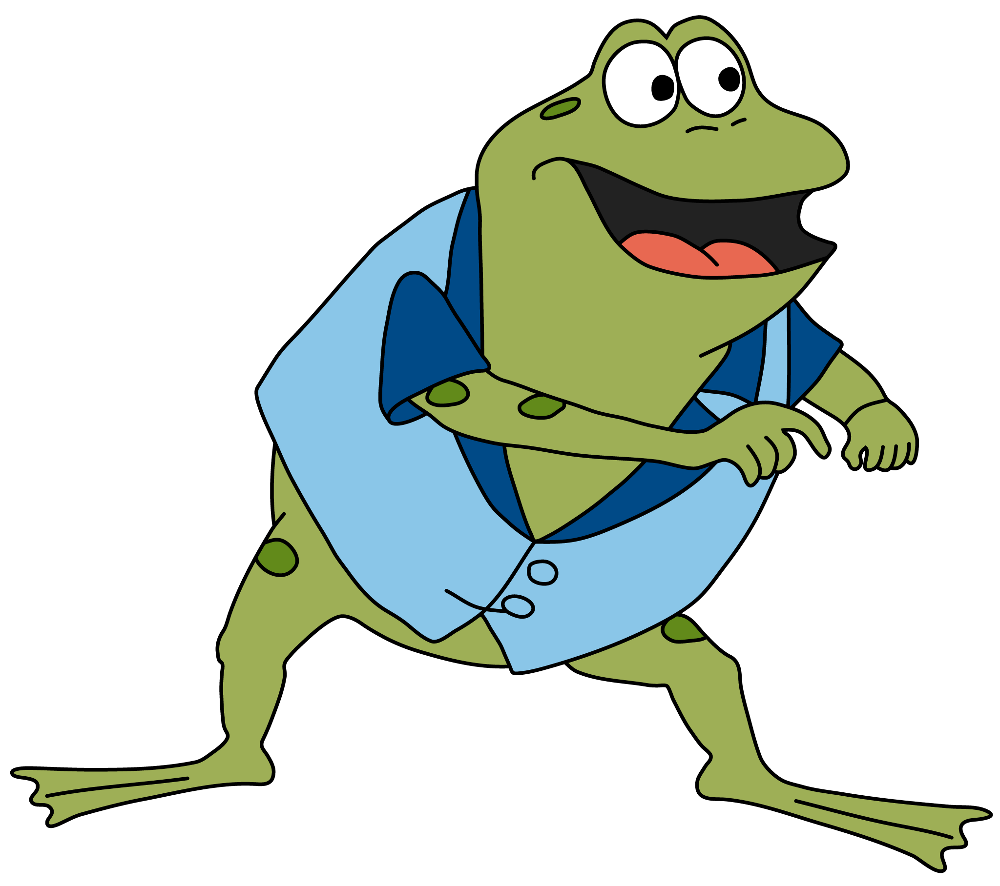

Tänk på hur texten är orienterat.Hint:Titta på text-align i CSS.
| Fronted | Mitt i mellan | Backend |
| Webbutveckling 1 | programering 1 | Dator - och nätverksteknik |
| Webbutveckling 2 | programering 2 | nätverksteknik |
| webbserverprogrammening 1 | ||
| webbserverprogrammening 2 |
Försök att återskapa den här tabellen. Grodan Boll hittar ni på den här länken.Hint.Ha endast en rad och kika på padding- top/botton funkar.
| Kom ihåg att bilder kan placeras i en tabell utan konstigheter! |  |
Bilden till vänster placeras inom dessa td-taggar! |